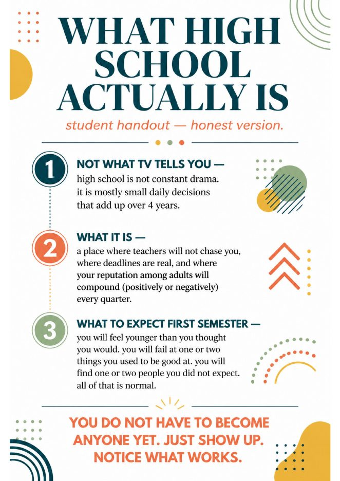
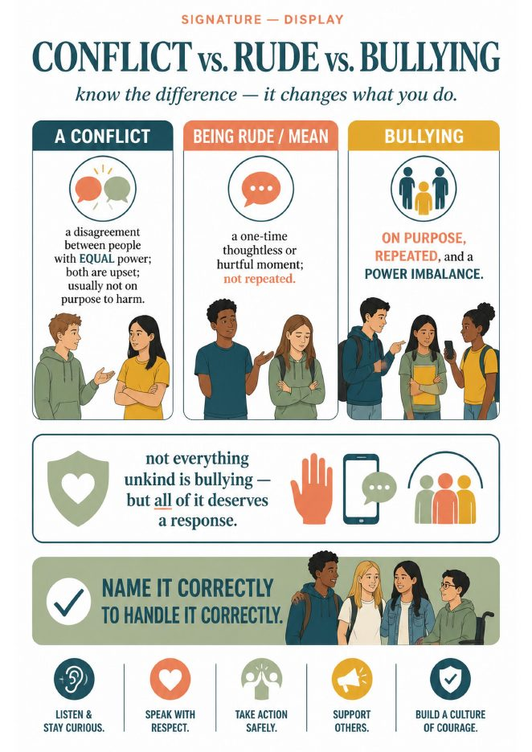
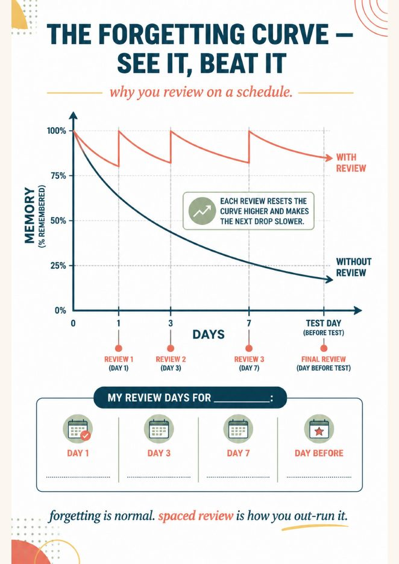
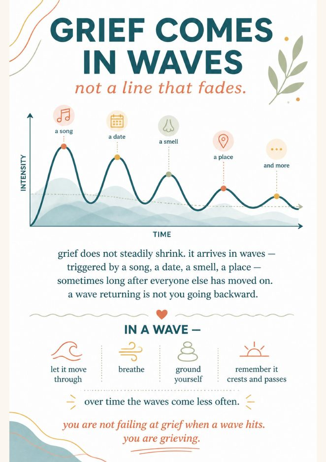
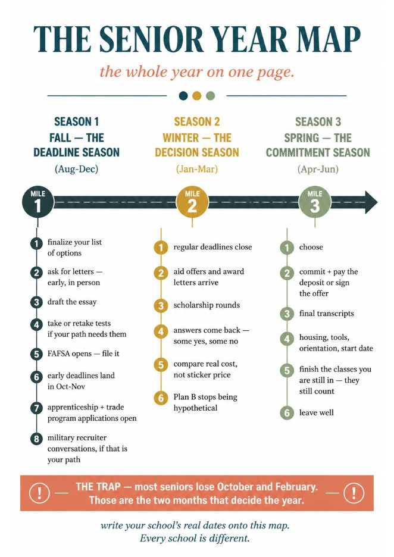
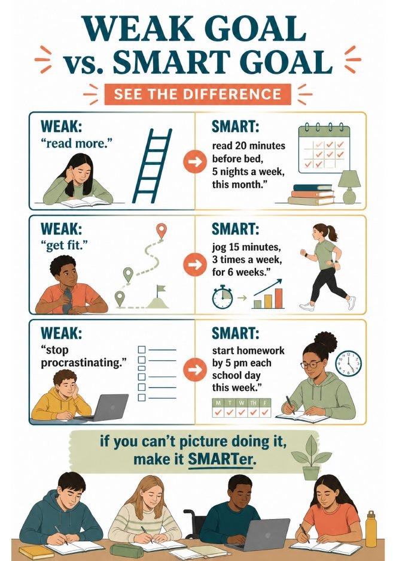

Notes from the desk
One page, one lesson, this week.
Every post is built around a single page from a unit: the infographic you project, the chart you hand out, the ten minutes you have. Read it, print it, teach it.

The first nine weeks of 9th grade: what to teach in advisory, week by week.
Identity first, planner second, asking for help third. A sequence that holds up through October.

Conflict, rude, or bullying? The one chart that ends the “everything is bullying” problem.
Why naming it correctly changes what students do next, and how to teach the difference in ten minutes.

The forgetting curve on one page: how to get students to review on a schedule.
Day 1, day 3, day 7, day before. The chart, the handout and the two sentences that sell it to teenagers.

Grief comes in waves, not stages. A non-clinical page for the student who came back to school too soon.
What to say, what not to say, and the one page counselors keep in a drawer for November.

The two months that decide senior year, and how to get seniors through them.
October and February. A one-page map of the whole year, and the deadline wall that goes on the fridge.

Weak goal, SMART goal: the January lesson that makes new-semester goals survive February.
“Get better at math” becomes “20 minutes, 4 nights a week, C to B by the end of the quarter.”
By email
One lesson a month, in your inbox.
The Advisory Starter Set to begin, then one new post a month with the printable attached. No sales emails between.
Thanks. Check your inbox for the starter set.
Unsubscribe in one click. We never share your address.